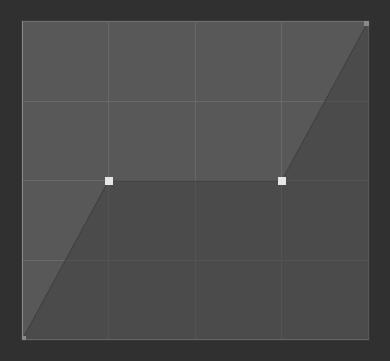
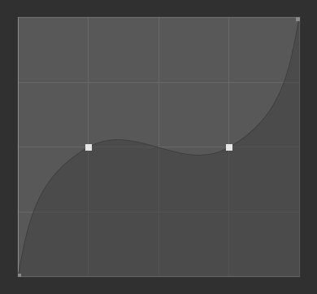
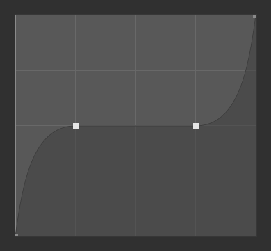
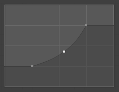
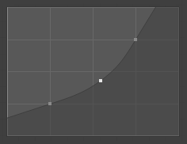

曲线部件
曲线部件。
曲线部件 允许通过调整一条曲线来直观地将输入值的范围映射到一组输出值，其中 X 轴代表输入，Y 轴代表输出。
控制点
和 Blender 中所有曲线一样，曲线 部件的曲线也是使用 控制点 控制的。
默认自带两个控制点：一个位于（0.0, 0.0），另一个位于（1.0, 1.0），意味着输入直接映射为输出（不变）。
- 移动
单击选中并拖动即可。
- 相加
在曲线任意没有控制点位置单击。
- 移除
选中然后点击右上角的
X按钮。
控制器
曲线图的上方有一排控制工具，包括：
- 放大（放大镜图标为加号）
放大图像中间位置，以显示更多细节，并提供更精确控制。在图表的空白位置单击并拖动，即可浏览放大后的曲线。
- 缩小（放大镜图标为减号）
缩小曲线图表，显示细节更少，查看整个图表。缩小范围不能超出裁剪边界（见下文 限制范围 ）。
- 专项菜单
v 一个专用菜单，用来编辑控制点或设置属性。
- 恢复视图
恢复曲线视图。
- 控制柄选项
控制控制点如何影响曲线形状。它确定所选控制点上曲线段的插值。
- 矢量型控制柄
矢量手柄创造了直线和锐角。
- 自动型控制柄
自动型控制柄创建光滑的曲线。
- 自动钳制控制柄
自动控制柄，可创建平滑曲线，防止转折过于突兀。
- 自由控制柄
可以完全独立移动控制柄，这将导致方向的急剧变化。
- 对齐自由控制柄
曲线点的两个控制柄被锁定在一起，始终指向完全相反的方向。这将产生控制点位置始终平滑的曲线。
 矢量型控制柄。
 自动型控制柄。
 自动钳制型手柄。
- 延伸选项
控制曲线在第一个控制点之前和最后一个控制点之后的延伸方式。
- 延伸水平线
水平延伸曲线的第一点左侧和最后一点右侧。
- 延伸已外扩项
基于曲线形状，外插第一点左侧和最后一点右侧的曲线斜率。
 衍射水平线。
 延伸已外扩项。
- 重置曲线
重置曲线为默认状态（删除所有已添加的控制点）。
- 钳制选项（点图标）
- 使用钳制
强制曲线控制点位于指定数值范围内。
- 最小值 X/Y 与 最大值 X/Y
设置曲线控制点的上下限。
- 删除
X 删除控制点。第一个与最后一个控制点无法删除。
- X、Y
选中的控制点的坐标。
- 复制/粘贴 Ctrl-C, Ctrl-V
可以使用 Ctrl-C、Ctrl-V 将整个曲线从一个曲线部件复制到另一个曲线部件。